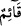
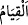

Sâlih olsun yaramaz olsun “herkesin” hayır ve şerden “kazandığını gözetleyip
muhâfaza eden,” kimin ne yaptığını kaydederek karşılığını verecek olan Allah, hiç
böyle yapamayan gibi olur mu? Yani bağışlamayıp da cezâlandırmak istediği takdirde
yaptığının karşılığını veren Allah, bu sıfata sâhip olmayan, ne zarar ne de fayda
verebilen putlar gibi olur mu?
Bu ifade “Hiç yaratan yaratmayan gibi olur mu?” (en-Nahl, 16/17) âyetine benzer.
Yâni, bütün nefislerin hayırlı ve şerli davranışlarını bilen ve nefislere bu
davranışlarının karşılığını verecek olan birisi, elbette hiçbir şeyden haberi olmayan,
son derece âciz, zayıf ve bilgisiz biri gibi olmaz!
Âyette geçen “__WORD__ kelimesinin cemisi olan “__WORD__ın buradaki mânâsı, yarattığı
varlıkların işlerini üstlenmek, gerek rızıklarını gerekse ecellerini planlamak ve
karşılıklarını vermek üzere amellerini sayıp dökmek demektir.
“Onlar” putları “Allah’a ortaklar koştular.” Bu ifade, yeni başlayan bir cümle olup
şu mânâdadır: Kâfirler Allah’la putları bir tutarak ibâdet konusunda putları Allah’a
ortak koştular. Oysa başında durup onları gözetme hususunda Allah’la bir ve O’na ortak
olabilselerdi, işte o zaman hakîkaten O’na denk ve ortak olabilirlerdi. Allah’la putlar
arasındaki bu büyük farklılığı bildikleri halde bu putları O’na denk ve ortak görmeleri,
Allah’ı inkar etmeleri, ne şaşılacak bir şeydir!
“De ki: “Onlara ad verin (onlar necidir?).” Yani koştuğunuz bu ortakların ismini
açıklayın. Ne gibi özellikleri varsa ortaya koyun. Sonra da hiç bu putlar kulluk edilmeye
ve Allah’a ortak koşulmaya lâyık şeyler midir düşünün!
Bu ifade isimlerin sıfatlardan alındığına işaret ediyor.
Şâyet bu putlarda Allah’ın herhangi bir sıfatını bulamadıysanız, bunlara nasıl isim
vereceksiniz? Nitekim Kâşifî şöyle der: “Murad şudur: Cenâb-ı Hakk’a Hay (diri),
Kâdir (kudred sâhibi), Hâlık (yaratan), Razzâk (bol rızık veren), Semî‘ (işiten), Basîr
(gören), Alîm (bilen), Hakîm (hikmet sâhibi) gibi isimler verilir. Bu isimlerden
hiçbirini putlara vermek mümkün değildir.”
Bahru’l-ulûm’da der ki: “Onlara ad verin” ifadesinde kinâye sanatı kullanılmıştır.
Çünkü “ad verin” demek, isimlerini belirleyin demektir. Bir şeyi ismiyle belirlemek o
şeyin var oluşunun gereklerinden olduğundan o putların adlarının belirlenememesi, var
olmadıklarına kinâye yapılmıştır.
Yani, ‘bu putların bizim katımızda kulluk edilmeye hak kazanacak bir isimleri yoktur.
Sizin katınızda bir isimleri varsa bu isimlerini ortaya koyun ve bu verdiğiniz isimlerle
ibâdete lâyık olup olmadıklarını da düşünün.’ Fakat putperestlerin yanında da onların
kulluk edilmeyi gerektirecek bir isimleri olmadığından onlar kulluk edilmeyi hak
etmemişlerdir. Müşriklerin de ibâdetleri ve ortak koşmaları gerçekleşmemiştir.”
“Yoksa siz Allah’a yeryüzünde bilmediği bir şeyi mi” yani varlığı olmayan, var
olduğu Allah’ın ilminde yer almayan, ibâdet edilmeye lâyık ortaklar olduğunu mu
“haber veriyorsunuz?”